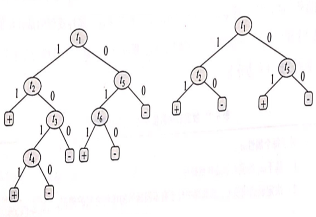
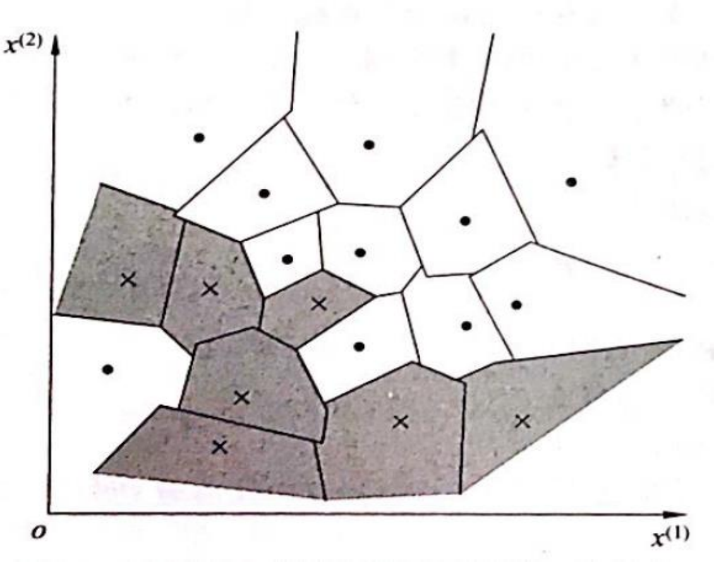
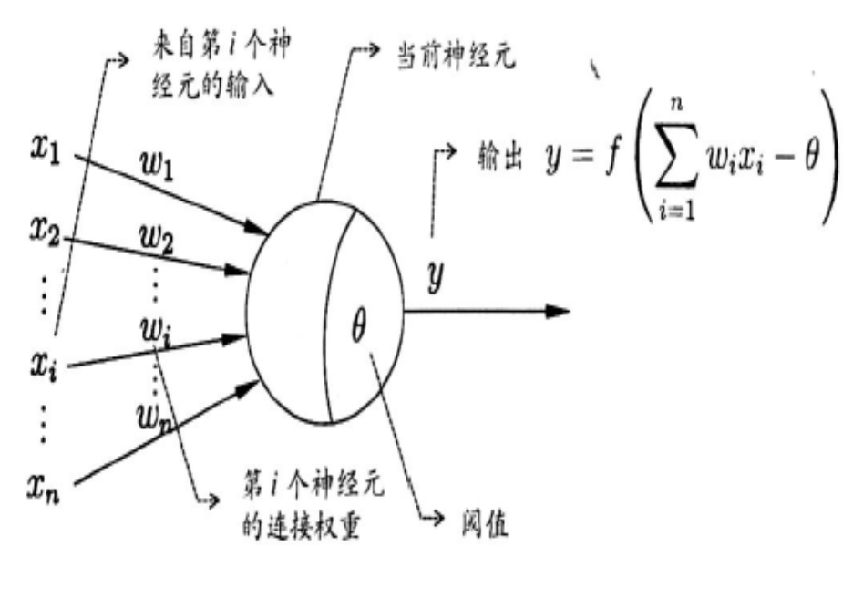
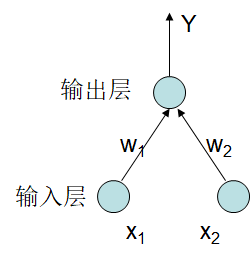
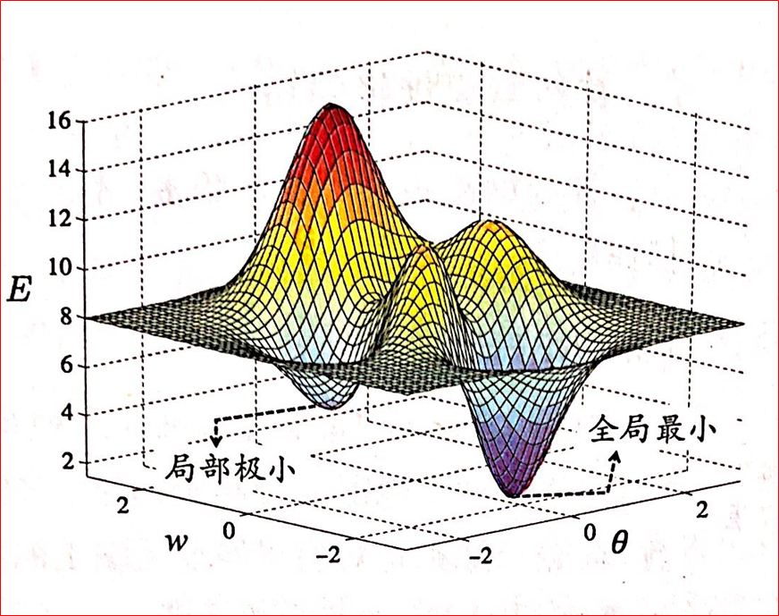

贝叶斯分类器
单属性情况
离散多属性情况
朴素贝叶斯分类算法
问题1：对于条件概率 $P(X|c_j )$，由于涉及到关于 $x$ 的所有属性的联合概率，尽管我们假设属性之间是相互独立的，但直接根据样本出现的频率来估算概率实际会遇到很大困难。
解决办法：平滑处理
常用拉普拉斯修正（$Laplacian\ correction$）
问题2：稀少事件的概率估算
用相对频率估算概率值的方法，只有在大量样本(实验)的支持下才可以被信任。
解决方法：使用m-估值
连续属性情况
区间离散化
- 概率密度函数
这部分不详细，主要是公式太过，考试临近，没时间敲公式，后面有时间再补起来
线性回归
线性模型的基本形式
其中$x=(x_0,x_1,x_2,…,x_d )$
根据线性模型表达式，当权重向量 $w$ 确定后，线性模型也就得以确定，所以问题转化为如何求权重 $w$。
最小二乘法
要确定 $w$ 和 $b$ 的值，关键是如何衡量 $f(x)$ 和 $y$ 之间的误差，方差是线性回归任务中最常用的性能度量方法。
$d$ 个属性的情况：
令
要使：$f(x^{(i)})=w^Tx^{(i)}≈y^{(i)}$
即
极大似然估计$(Likelihood)$解释最小二乘法
对数似然函数（目标函数）：
梯度下降算法 $(gradient\ descent)$
目标函数：见上式
算法过程：
初始化 $w$ （随机初始化）
沿着负梯度方向迭代，更新后的 $w$ 使 $J(w)$ 更小：$w=w-\eta\cfrac{\partial J(w)}{\partial w}$
从而得到$w_j=w_j+\eta(y^{(i)}-f(x^{(i)}))x_j^{(i)}$
此处是SGD（随机梯度下降）算法，使用一个随机的样本$x^{(i)}$ 来更新参数 $w_j$
如果是BGD算法 ，$w_j=w_j-\eta\sum_{i=1}^m-(y^{(i)}-f(x^{(i)}))x_j^{(i)}$，使用全部的 $m$ 个样本更新参数 $w_j$
例题
考虑一个二分类问题，其输出标记 $y\in{0,1}$。令学习率 $\eta=0.5$ （随机产生），初始权重：$w_0=0.1，w_1 =0.3，w_2 =0.4，x_0 =1$
| 样例 | $ x_1$ | $x_2$ | $y$ |
|---|---|---|---|
| $e_1$ | 1 | 0 | 0 |
| $e_2$ | 1 | 1 | 1 |
| $e_3$ | 0 | 0 | 0 |
线性分类器关于 $x$ 类别的假设为：
模型在学习过程中，权重 $w$ 的调整情况如下：
| $ x_1$ | $ x_2$ | $ w_0$ | $ w_1$ | $ x_2$ | $ f(x)$ | $y$ | $y-f(x)$ | |
|---|---|---|---|---|---|---|---|---|
| 初始 | 0.1 | 0.3 | 0.4 | |||||
| $e_1$ | 1 | 0 | 1 | 0 | -1 | |||
| 新分类器 | -0.4 | -0.2 | 0.4 | |||||
| $ e_2$ | 1 | 1 | 0 | 1 | 1 | |||
| 新分类器 | 0.1 | 0.3 | 0.9 | |||||
| $e_3$ | 0 | 0 | 1 | 0 | -1 | |||
| 最终分类器 | -0.4 | 0.3 | 0.9 |
学习后的模型为：$f(x)=0.3x_1+0.9x_2-0.4$
正则化
参考这里：科大软院-人工智能期末总结-正则化
考试重点
线性模型的基本形式
线性回归的目标函数
极大似然估计
梯度下降
逻辑回归
逻辑回归模型
线性回归是对线性模型进行回归学习，即不断调整参数 $w$ 的过程，对于分类问题如何用线性模型来求解呢？
线性回归模型产生的预测值 $z=wx$ 为实数值，通过将实数值z转换为 $0/1$ 值则解决了二分类问题。
单位阶跃函数、S形函数等均可用于完成这样的转换，但单位阶跃函数不连续，而S形函数连续且单调可微，比单位阶跃函数更好。S形函数可以将z转换为一个接近0或1的y值(概率)。
S型函数举例：$sigmoid$ 函数 $y =\cfrac{1}{1+e^{-z}}=\cfrac{1}{1+e^{-wx}}$
几率$(odds)$: 若将y看成是样本x取正例的概率，则1-y为取反例的概率，二者的比值 $\cfrac{y}{1-y}$ 称为几率
似然函数
学习规则
逻辑回归参数的学习规则与线性回归的学习规则从形式上看完全一样，不同点就在于 $f(x)$ 函数不一样
多分类问题
$softmax$ 回归（多分类回归）
二分类器组(一对多，$OvRest$)
通过多个二分类器的组合来完成多分类任务。
一对一 $(OvO)$
多项式模型
我的理解是：特征变换$(Feature\ transformation)$，即将原空间里的属性映射到新空间，使原来线性不可分的数据变成线性可分，然后再用线性可分问题的求解方法来求解。
参考这里：科大软院-人工智能期末总结-逻辑回归
考试重点
sigmoid函数
似然函数
学习规则
决策树
参考李航《统计学习方法》P55
决策树模型与学习
决策树模型
决策树：决策树是一种树型结构，其中每个结点表示在一个属性上的测试，每个分支代表一个测试输出，每个叶结点代表一种类别。决策树学习采用自顶向下的递归方法，其基本思想是以信息熵为度量，构造一棵熵值下降最快的树，到叶子结点处的熵值为0，此时每个叶结点中的样例均属于同一个类。
决策树由结点（$node$）和有向边（$directed\ edge$）组成，其中结点有两种类型：内部节点和叶节点，内部节点表示一个特征或属性，叶节点表示一个类。
优点：模型具有可读性，分类速度快
决策树学习的3个步骤：特征选择、决策树的生成、决策树的修剪
决策树与if-then规则
- if-then规则：由决策树的根节点到叶节点的每一条路径构建一条规则；路径上的内部节点的特征对应着规则的条件，而叶结点的类对应着规则的结论
- if-then规则集合的重要性质：决策树的每条路径互斥且完备，即每个实例都被一条路径或一条规则所覆盖，而且只被一条路径或一条规则所覆盖
决策树与条件概率分布
决策树学习
决策树的学习本质上是从训练数据集中归纳出一组分类规则。与训练数据集不相矛盾的决策树可能有多个，可能一个也没有。我们需要的是一个与训练数据矛盾较小的决策树，同时具有很好的泛化能力。
学习过程：
开始，构建根节点，将所有训练数据都放在根节点。
选择一个最优特征，按照这一特征将训练数据集分割成子集，使得各个子集有一个在当前条件下最好的分类
如果这些子集已经能够被基本正确分类，那么构建叶节点，并将这些子集分到所对应的叶节点中去
如果还有子集不能被基本正确分类，那么就对这些子集选择新的最优特征，继续对其进行分割，构建相应的节点
如此递归下去，直到所有训练数据子集被基本正确分类，或者没有合适的特征为止。最后每个子集都被分到叶节点上，即都有了明确的类。
过拟合
以上方法生成决策树可能对训练数据有很好的分类能力，但对未知的测试数据未必有很好的分类能力，泛化能力差，即可能发生过拟合现象。
解决方法：剪枝，使得树变得更简单，从而使它具有更好的泛化能力。具体地，就是去掉过于细分的叶节点。
特征选择
特征选择是决定用哪个特征来划分特征空间
信息增益
信息量
熵（$entropy$）：表示随机变量（系统）的不确定性的度量
其中，$p_i$ 为随机变量 $X$ 的概率分布，熵只与它的概率分布有关而与它的取值无关，所以上式写成关于 $p$ 的函数
单位：对数以2为底或以 $e$ 为底时，单位分别为比特（$bit$）或纳特（$nat$）
熵是平均信息量，信息量代表了一个事件的不确定性，熵表示系统的混乱程度。系统中信息量总和越大，则表明这个系统的不确定性就越大。
条件熵（$conditional\ entropy$）：$H(Y|X)$表示 $X$ 发生的前提下 $Y$ 熵
当熵和条件熵中的概率由数据估计得到时，所对应的熵与条件熵分别称为经验熵（$empirical\ entropy$）和经验条件熵（$empirical\ conditional\ entropy$）
信息增益（$information\ gain$）：表示得知特征 $X$ 的信息而使得类 $Y$ 的信息的不确定性减少的程度
特征 $A$ 对训练数据集 $D$ 的信息增益 $g(D,A)$，定义为集合 $D$ 的经验熵 $H(D)$ 与特征 $A$ 给定条件下 $D$ 的经验条件熵 $H(D|A)$ 之差，即
不同的特征往往具有不同的信息增益，信息增益越大的特征具有更强的分类能力。
根据信息增益准则的特征选择方法是：对于训练集（或子集） $D$，计算其每个特征的信息增益，并比较它们的大小，选择信息增益最大的特征。
信息增益的算法
设训练数据集为 $D$，$|D|$ 为其样本容量，即样本个数
设有 $K$ 个类 $C_k$ ，$k=1,2,…,K$，$|C_k|$ 为属于类 $C_k$ 的样本个数，$\sum_{k=1}^K|C_k|=|D|$
设特征 $A$ 有 $n$ 个不同的取值$\{a_1,a_2,…,a_n\}$ ，根据特征 $A$ 的取值将 $D$ 划分为 $n$ 个子集 $D_1,D_2,…,D_n$，$|D_i|$ 为 $ D_i $ 的样本个数，$\sum_{i=1}^n|D_i|=|D|$
记子集 $D_i$ 中属于类 $C_k$ 的样本的集合为 $D_{ik}$，即 $D_{ik}=D_i\bigcap C_k$， $|D_{ik}|$ 为 $D_{ik}$ 的样本个数
于是信息增益的算法如下：
输入：训练数据集为 $D$ 和特征 $A$
输出：特征 $A$ 对训练数据集 $D$ 的信息增益 $g(d,a)$
计算数据集 $D$ 的经验熵 $H(D)$
计算特征 $A$ 对数据集 $D$ 的经验条件熵 $H(D|A)$
计算信息增益
信息增益比
以信息增益作为划分训练数据的准则，存在偏向于选择取值较多的特征的问题。使用信息增益比可以对这一问题进行校正。
- 信息增益比：特征 $A$ 对训练数据集 $D$ 的信息增益比$g_R(D,A)$ 定义为其信息增益 $g(D,A)$ 与训练数据 $D$ 关于特征 $A$ 的值的熵 $H_A(D)$ 之比，即$n$ 是特征 $A$ 取值的个数
决策树的生成
ID3 算法
$ID3$ 算法的核心是在决策树各个节点上应用信息增益准则选择特征，递归的构建决策树。
具体方法是：从根节点开始，对结点计算所有可能的特征的信息增益，选择信息增益最大的特征作为结点的特征，由该特征的不同取值建立子结点；再对子结点递归地调用以上方法，构建决策树；直到所有特征的信息增益均很小或没有特征可以选择为止。最后得到一个决策树。
C4.5的生成算法
$C4.5$ 再生成的过程中，用信息增益比来选择划分特征。具体方法与ID3方法类似。
决策树的剪枝
剪枝是决策树学习方法解决过拟合问题的重要手段。在决策树学习中，为了尽可能正确分类训练样本，结点划分过程将不断重复，这样有时会造成决策树分枝过多。这种因对训练样例学得过好，而把训练集自身的一些特点当作所有数据都具有的一般性质而导致过拟合。因此通过主动去掉一些分枝来降低过拟合的风险。
剪枝的方法就是用叶结点替换子树，如下图所示。

剪枝后原决策树的规模将减小，引起一些训练样例错误分类，影响模型的精度或正确率。但这个问题并不严重，因为我们关心的是模型的泛化能力，而不是对已知训练样例100%的正确率。
是否执行剪枝操作可以通过下面两个指标来判断。
误差估计
令 $n$ 是到达测试结点ti的训练样本数，当用叶结点替换 $t_i$ 为根的子树后，$n$ 个样例中将有一些样例被错分。用$e$ 来表示这些错误分类的样例数，用相对频率 $\cfrac{e}{n}$ 来估算一个样例在这个叶结点上被错误分类的概率：
修正项是为了避免n过小引起的问题，则整棵树的错误率可以通过所有剪枝后各子树的错误率的加权平均得到。
上图中，令 $n_2，n_5$ 分别为到达 $t_2，t_5$的训练样例数，令$E_2，E_5$ 为两棵子树的错误率，则树的错误率为：
通过比较剪之前和剪枝后的错误率，决定是否执行剪枝操作。
准确率
用测试集的样例来比较剪枝前后的分类准确率，剪枝后测试样例的分类准确率提高，则进行剪枝，反之则不进行剪枝。
预剪枝($prepruning$)
预剪枝是在决策树生成过程中，对每个结点在划分前先进行估算。若当前结点的划分不能带来决策树泛化能力的提升，则停止划分并将当前结点标记为叶结点。
预剪枝过程
如前图所示，首先基于信息增益率法则选择属性 $t_1$ 对训练集样例划分，并产生 $t_2$ 和 $t_5$ 子结点。若不需要划分则 $t_1$ 标记为叶结点，其类别为样例数最多的类别。
接着用测试集的样本对决策树进行评估。评估用 $t_1$ 划分后测试集的准确率，若划分后的准确率高于划分前，则完成本次划分，反之则不划分。
后剪枝($post-pruning$)
后剪枝先从训练集生成一棵完整的决策树，然后自底向上地对非叶结点考察，若将该结点对应的子树替换为叶结点能提升决策树的泛化能力，则完成剪枝。
后剪枝过程
首先用测试集计算决策树的准确率，然后从最底层非叶结点子树替换为叶结点，计算剪枝后的准确率，若剪枝后准确率提升，则完成剪枝，反之则不进行剪枝。这样的剪枝过程自底向上直到根结点为止。
CART算法
分类与回归树($classification and regression tree，CART$)，即可用于分类，也可用于回归。
回归树
采用启发式方法去找特征空间的最佳切分变量和切分点，有点类似于动态规划算法，不断递归下去，最终生成一棵回归树。
分类树
与ID3和C4.5算法类似，CART分类树算法用基尼指数（$Gini\ index$）来选择划分特征。
- 基尼指数：分类问题中，假设有 $K$ 个类，样本点属于第 $k$ 类的概率为 $p_k$，则概率分布的基尼指数定义为
对于二分类问题，若样本点属于第1个类的概率是 $p$，则概率分布的基尼指数为
对于给定的样本集合 $D$，其基尼指数为
这里，$C_k$ 是 $D$ 中属于第 $k$ 类的样本子集，$K$ 是类的个数
如果样本集合 $D$ 根据特征 $A$ 是否取某一可能值 $a$ 被分割成 $D_1$ 和 $D_2$ 两部分，即
则在特征 $A$ 的条件下，集合 $D$ 的基尼指数定义为
基尼指数 $Gini(D)$ 表示集合 $D$ 的不确定性，基尼指数 $Gini(D,A)$ 表示经 $A=a$ 分割后集合 $D$ 的不确定性。基尼指数值越大，样本集合的不确定性也就越大，这一点与熵类似。
CART生成算法
李航《统计学习方法》P70
算法停止计算条件：节点中的样本数小于预定的阈值，或者样本集的基尼指数小于预定阈值（样本基本属于同一类），或者没有更多的特征继续往下划分。
决策树算法例题汇总：李航《统计学习方法》
P62 例5.2 根据信息增益准则选择最优划分特征
P64 例5.3 利用ID3算法建立决策树
P71 例5.4 利用CART算法生成决策树
考试重点
相关概念
信息量
熵
经验熵（系统熵）
经验条件熵
- 信息增益
- 信息增益率
- 基尼指数
- ID3算法
- C4.5算法
- CART算法
- 剪枝方法
K近邻分类器$(K\ Nearest\ Neighbor)$
$k$ 近邻学习
$k$ 近邻是一种基本分类和回归方法，其工作机制非常简单：基于某种距离度量找出训练集中与其最靠近的 $k$ 个训练样例，然后基于这 $k$ 个邻居的信息进行预测或分类。通常在分类任务中使用投票法，在回归任务中使用平均法，也可根据距离远近进行加权平均或加权投票。
$KNN$ 是一种称为懒惰学习方法，它没有明显的训练(学习)过程，在训练阶段仅仅是保存样本，因此训练开销为0。
$KNN$ 实际上利用训练集对特征向量空间进行划分，并作为其分类的模型。
$KNN$ 的三要素：
- $k$ 值选择
- 距离度量方法
- 分类决策规则
KNN模型
当训练集、$k$ 值、距离度量及分类决策规则确
定后，对于任何新的输入样例，它所属的类别将唯一确定。这相当于根据上述要素将特征空间划分为一些子空间，确定子空间里每个点所属的类。
特征空间中，对每个训练样例 $x_i$ ，所有距离该点更近的点组成一个区域，称为单元
$(cell)$。最邻近法将样例 $x_i$的类别 $y_i$ 作为其单元内所有点的类标记，这样每个单元样例点的类别是确定的。

距离度量
特征空间中二个样例点的距离是二个样例相似程度的反映。$KNN$特征空间一般是 $d$ 维的实数空间 $R^d$ ，使用的距离为欧氏距离，但也可以是其他距离。
欧氏距离计算方法：
设特征空间 $Χ$ 是 $d$ 维实数向量空间 $R^d$
$x_i,x_j\in X,x_i=(x_1^{(i)},x_2^{(i)},…,x_d^{(i)}),x_j=(x_1^{(j)},x_2^{(j)},…,x_d^{(j)})$
则欧式距离为：
k值的选择
$k$ 值选择对 $KNN$ 方法的结果产生重大影响。如果选择较小的 $k$ 值，相当于用较小范围内的训练样例进行预测，因此只有较近的训练样例才会对预测结果起作用。缺点是预测结果对近邻的训练样例非常敏感，如果恰巧是噪声，则预测将会出错。换句话说，$k$ 值的减少意味着整体模型变得复杂，容易引起过拟合。
如果选择较大的k值，相对于用较大范围内的训练样例进行预测。优点是可以减少学习误差，缺点是与输入样本较远的(不相似)的训练样例也会对预测起作用，使预测出错。
$k$ 值增加意味着模型变得简单。特别地，如果 $k=m$ ，那么无论输入是什么，测试结果都取训练集中最多类的标记，显然不可取。
在实际应用中，$k$ 值一般取一个较小的数值，通常为奇数，或采用交叉验证法来选取最优的 $k$ 值。
分类决策规则
$KNN$ 法中分类决策规则往往采用多数(投票)
表决，即由输入样例的 $k$ 个近邻类别多数所决定。
KNN的实现：kd树
实现 $ KNN$ 时，主要考虑的问题是如何对训练数据进行快速 $k$ 近邻搜索，这对于特征空间的维数及训练集很大时尤为重要。
$KNN$ 法最简单的实现方式为线性扫描，这时要计算预测样例与每一个训练样例之间的距离，当训练集很大时，计算非常耗时，
实际不可行。
应用 $kd$ 树结构可以减少计算距离的次数，从而提高 $k$ 近邻搜索的效率。
算法和例题参考《统计学习方法》李航P42
例题：$D=\{(2,3),(5,4),(9,6),(4,7),(8,1),(7,2)\}$，构造平衡的kd树。
加权最近邻
令$w_1 ,w_2 ,…,w_k$ 为 $k$ 个近邻的权重，加权 $k$ 近邻分类器把正类近邻的权重和负类近邻的权重比较，输出相应的结果。
假设 $k$ 个近邻点按照距离大小排序为：$d_1, d_2, …, d_k$，其中 $d_1$ 最小，$d_k$ 最大，则一个简单计算第 $i$ 个近邻点权重公式为：
$w_i$ 的取值范围在0-1之间
其他问题
不相关属性的影响
属性值的尺度影响
解决办法：标准化属性尺度
危险样例
由于在训练集中存在一些噪声或影响分类性能的样例，所以在使用训练集之前需要进行预处理，删除那些被认为是无效或有害的样例。其他分类器也有类似的问题。
需要预处理的二种情况：
- 某个样例被其他类别的样例所包围
- 二个类边界区域的样例
去除危险样例方法：托梅克 $(Tomck)$ 连接技术
在移除危险样例前，首先要能检测到这些危险的样例。可以使用托梅克连接技术。具体为：
一个样例对 $ x_1$ 和 $x_2$，如果同时满足3个条件，
则它们形成了一个托梅克连接。$ x_1$ 是 $x_2$ 的最近邻
$x_2$ 是 $x_1$ 的最近邻
$x_1$ 和 $x_2$ 的类别不同
需要注意的是移除一个托梅克连接可能会生成新的托梅克连接，所以需重复执行多次。
删除托梅克连接存在的问题
- 并不能检测到所有导致错误的样例，相反可能使一些无辜的样例被删除
- 训练集样例比较少时
- 当一类样例数明显少于另一类样例数时
考试重点：
KNN三要素
kd树
加权最近邻
人工神经网络
神经元($neuron$)模型

上图所示的模型中，神经元接收到来自 $n$ 个其他神经元传递过来的信号，这些输入信号通过带权重的连接进行传递，神经元接收到的总输入值将与神经元的阈值进行比较，然后通“激活函数”（$activation\ function$）处理以产生神经元的输出。
常见的激活函数：
- 阶跃函数：$sgn(x)= \begin{cases} 1& \text {if $x\geq 0$} \\ 0 & \text{if $x<0$} \end{cases}$
- Sigmoid函数：$sigmoid(x)=\cfrac{1}{1+e^{-x}}$
- 双曲正切函数：$tanh(x)=\cfrac{e^x-e^{-x}}{e^x+e^{-x}}$
- 线性整流单元函数：$ReLU(x)=\max (0,x)$
感知机与多层网络
感知机
感知机（$perceptron$）是人工神经网络中最典型的结构，它由两层神经元组成：输入层和输出层。输入层接受外界输入信号后传递给输出层，输出层为M-P神经元。

感知机可以处理与、或、非这种线性可分问题，但不能处理非线性可分问题，如异或等。这是因为单层感知机的学习能力太弱，所以要解决非线性可分问题需要考虑使用多层的功能神经元。如简单的二层感知机可方便地解决异或问题。
多层神经网络
参考这里：科大软院-人工智能期末总结-深度学习
误差反向传播算法
参考这里：科大软院-人工智能期末总结-反向传播算法
全局最小与局部最小
神经网络的训练过程是一个参数寻优过程，即在参数空间中寻找一组最优参数，使误差E最小。
最小分为局部最小和全局最小二种情况：

基于梯度下降的搜索是最为广泛使用的参数寻优方法。在这种方法中，首先从初始解出发，迭代寻找最优参数解。在迭代过程中，若误差函数在当前点的梯度为0，说明已到达局部最小，此时更新量为0，因此迭代将终止。而此时的局部最小不一定是全局最小，如何跳出局部最小找到全局最小的策略有：
以多组不同参数值初始化，训练后取误差最小的解为最终参数
使用“模拟退火”（$simulated\ annealing$），即在每一步都以一定概率接受比当前解更差的结果
随机梯度下降，即随机选取一个或部分样例的梯度作为更新梯度值
其他常见神经网络
RBF网络
径向基函数（$Radial\ Basis\ Function$）网络
ART网络
自适应谐振理论（$Adaptive\ Resonance\ Theory$）网络
SOM网络
自组织映射（$Self\text{-}Organizing\ Map$）网络
级联相关网络
Elman网络
布尔兹曼机（$Boltzmann$）网络
考试重点
- M-P神经元结构
- 激活函数（传递函数）
- 前向传播网络
- BP算法
SVM模型
先挖个坑，后期更新
集成学习
个体与集成
集成学习通过构建并结合多个学习器来完成任务。
集成学习的一般结构为：一系列个体学习器采用某种策略结合在一起产生最终的输出。
同质：集成中个体学习器是同类型的，这种个体学习器又称为基学习器
异质：集成中个体学习器是不同类型的
弱学习器（$weak\ learner$）：泛化能力略优于随机猜测的学习器
目前集成学习方法大致分为两大类，即个体学习器之间存在强依赖关系，必须串行生成的序列化方法，如$Boosting$，提升树等；以及个体学习器之间不存在强依赖关系，如 $Bagging$ 和随机森林等。
Bagging方法
要得到泛化能力强的集成，个体学习器应尽可能相互独立。虽然在现实任务中很难做到，但可以设法使个体学习器尽可能具有较大的差异性。一个可能的做法是对训练样本采样，产生出若干个不同的子集，再从每个子集中训练出基学习器。
$Bagging$采用自助采样方法训练基学习器。每个基学习器将针对学习问题的不同方面进行训练。
Bagging算法
当采样生成了 $T$ 个训练子集 $D_i$ 后，为每个训练子集 $D_i$ 分配一个基学习器 $h_i$，再将这些基学习器结合，按照某种策略产生最终的输出。一般情况下，分类任务输出时采用简单投票法，回归任务时采用简单平均法。若分类预测出现票数相同时，可随机选取一个类，或使用基学习器的置信度来确定。
Bagging算法的时间复杂度
假设基学习器的计算复杂度为 $O(n)$ ，采样和投票的时间复杂度为 $O(m)$，则 $Bagging$ 算法的时间复杂度为$ T(O(m)+O(n))$。相比较采样和投票的时间 $O(m)$ 远小于 $ O(n)$，并且 $T$ 通常是一个不太大的常数，所以训练一个 $Bagging$ 集成与直接使用基学习算法训练一个学习器的复杂度同阶。这就表明Bagging是一个很高效的集成学习算法。
优点：泛化能力较强
缺点：训练误差较大
随机森林（$Random\ Forest$）
随机森林是Bagging的一个改进版本，也是一种比较新的机器学习模型，它以决策树为基学习器，模型的预测结果等于各决策树预测结果的某种加权平均。
- 对于分类问题，最终结果等于在决策树预测结果中出现次数最多的类别
- 对于回归问题，最终结果等于决策树预测结果的平均值
随机森林建模的依据是：一棵树犯错的概率比较大，但很多棵树同时犯错的概率就比较小。
例如针对某个分类问题，有3棵相互独立的决策树，它们独立预测的错误率为 $20％$，当把它们组成一个随机森林，那么预测的错误率将下降到 $10.4％$ 。由此看出，随机森林预测效果最重要的保证是森林中的决策树应相互独立。
那么该如何随机产生对于使用同一个训练集样例训练的决策树呢？可以从以下三个层面引入决策树的随机性。
对于每棵决策树采用自助法从训练集中随机选取训练子集
在确定划分属性时，并不遍历全部属性，而是随机挑选部分属性构成一个侯选属性子集，然后再在这个侯选属性子集中产生最优的划分属性
令 $k$ 为随机挑选属性的数目，则参数 $k$ 控制了随机性的引入程度。若 $k=d$，则与传统决策树相同；若 $k=1$，则是随机选择一个属性进行划分，一般情况下，推荐 $k=\log_2d$。
在选择属性划分阈值时，并不求得最优的解，而是随机构成一个候选阈值集合，再选取此集合中最优的划分阈值。
此处的阈值指的是，产生决策树时，当结点的信息增益（或其他指标）低于该阈值时就停止划分，将此节点设为叶节点。
提升（$Boosting$）方法
夏皮尔（$Schapire$）提升
尽管 $Bagging$ 方法有很好的结果，但也存在一个严重的缺陷，即参与投票的基学习器之间是相互独立的，使用的训练数据都是随机选择的，所以各基学习器之间关联性较弱。为此可以设计一个更聪明也更加有效的机制，使学习器之间呈现互补状态，如每个学习器都选择不易被其他学习器感知的样例进行训练，这也是 $Schapire\ Boosting$方法的主要思想。
简单的来说，夏皮尔提升的思想是让不同的基学习器之间有些关联（互补），它们各自对不同的属性敏感。
算法过程：
假设有一个随机子集 $D_i\in D$，用它训练出第一个学习器 $h_1$，当在整个训练集 $D$ 上测试这个分类器时，会出现一些错分类的样本。
接着创建另一个训练子集 $D_2\in D$，其 $50\%$ 的样例来自被 $h_1$ 正确分类的样例，另 $50 \%$ 的样例来自被 $h_1$ 错误分类的样例。这意味着用 $h_1$ 分类 $D_2$ 中的样本效果不佳，如同随机分类的结果。用 $D_2$ 训练出第二个学习器 $h_2$。
创建第三个训练子集 $D_3\in D$，$D_3$ 中样本选择用 $h_1$ 和 $h_2$ 分类结果不一致的样本训练得到学习器 $h_3$。
当一个新的样本输入时，集成分类器返回票数最多的结果。在夏皮尔提升方法中，三个分类器组成一个基本单元，递归应用此规则，可构建包含更多分类器的集成。
夏皮尔提升的问题：
假设每个基学习器的错误率 $<ε$，则分类器三元组的错误率 $<3ε^2-2ε^3<ε$，即夏皮尔方法提升了单个分类器的性能。但当这个三元组的错误率很低时，其他分类器很难得到同样低的错误率。换言之，用一个三元组和其他两个基分类器组成新的三元组后，集成分类器的性能就不会有多大的提升。
解决方法：三元组均由三个基分类器组成。
三元组的错误率：$3ε^2(1-ε)+ε^3=3ε^2-2ε^3$
训练集问题：$h_1$ 到 $h_2$ 再到 $h_3$ ，训练样本数量越来越少
$Adaboost$ 算法
目前最有可能实现的 $Boosting$ 算法是 $Adaboosting$ 方法，它根据样本的概率分布来挑选训练样本。
与夏皮尔方法相同点：$Adaboostng$ 也是逐个创建分类器，每个分类器由不同的训练子集训练得到。
不同点：$Adaboosting$ 产生训练子集的方法不同，使用的基分类器更多且无需组成三元组，分类结果不是采用简单投票法而是使用基于权重多数投票机制。
算法步骤：
训练子集 $D_1$时，每个样本被选取的概率相同，均为 $p=1/m$，并用此子集训练得到第一个分类器 $h_1$，然后训练样本被选择的概率将根据分类器 $h_1$ 的结果进行修改。
具体做法为：减小被 $h_1$ 正确分类样本的选择概率(权重)，增加被 $h_1$ 错分样本的选择概率。
在基分类器集成时，采取加权多数表决机制，即加大分类误差小的分类器权重值，使其在表决中起较大的作用，减小分类误差大的分类器权重值，使其在表决中起较小的作用。
概率(权重值)更新的过程：
令：
其中 $H(x)$ 为集成后的分类器，$h_i(x)$ 为基分类器，$\alpha_i$ 为 $h_i(x)$ 的系数，表示 $h_i(x)$ 在集成学习器中的重要性（权重）。显然 $H(x)$ 为一加法模型。
决策规则：
提升树($boosting\ tree$)
提升树是以决策树为基学习器的提升方法。提升树的提升方法采用加法模型与前向分步算法。对分类问题决策树是二叉分类树，对回归问题决策树是二叉回归树。
提升树模型可以表示为决策树的加法模型：
考试重点
- Bagging方法
- 随机森林
- 夏皮尔提升
- Adaboosting算法
聚类算法(Cluster)
定义
聚类就是将大量无标注的数据集，按数据的内在相似性将数据集划分为多个类别，使类别内的数据相似度较大而类别间的数据相似度较小。
聚类方法试图将数据集中的样本划分为若干个不相交的子集，每个子集成为一个簇(cluster)。通过划分，每个簇可能对应了一些潜在的概念(类别)。
最短距离法
最短距离法通过计算样本之间的距离，然后将距离值最小的样本进行合并的过程。
- 具体步骤如下
- 定义样本之间的距离计算方式
- 计算初始样本两两之间的距离，构造距离矩阵
- 根据距离矩阵，合并最小值对应的二个样本为一个新样本
- 更新距离矩阵，重复2，3步骤，直至所有样本合并为一个样本
- 距离计算的方式
- 最短距离：两个簇中最近样本的距离
- 最大距离：两个簇中最近样本的距离
- 平均距离：两个簇中所有样本两两之间的距离求和后再求平均
重心聚类法
重心聚类法首先确定每个簇的重心（重心可取簇中所有样本的平均值），然后计算各个簇重心之间的距离，得到一个距离矩阵。后续步骤如同最短距离法。
初始时，所有样本分别为一个簇，重心即为该样本自身，距离计算可采用欧氏距离。
动态聚类法
首先按粗粒度方式将样本划分为若干个簇，然后再逐步调整样本所属聚簇，即计算所有样本到簇中心点的距离，取最小距离为该样本的所属簇，中心点通常取簇样本的平均值。通过不断的调整过程，直到所有样本所属的簇不再变化为止。
k-Means算法
K-Means
定义
对m个样本初始化选择k个点作为聚类中心点，然后分别计算所有样本到k个中心点的距离，并把该样本加入到最近中心点对应的聚类。所有样本加入到k个聚簇后，更新k个中心点，调整样本的聚簇，不断重复此过程直到中心点不再变化或到达事先设定的迭代次数为止。
算法
设样本集 $D=\{ x_1,x_2,…,x_m\}$，由 $k$ 均值算法划分 $D$ 后得到 $k$ 个聚簇为：$C=\{C_1,C_2,…,C_k\}$。
令 $\mu_i$ 为聚簇 $C_i$ 的中心点，即
聚类的结果就是要使平方误差最小
如何选择k值
对于非监督学习，训练数据是没有类别标注的，那么除了极少数情况，我们无法知道数据应该被分为几类。而且对于k-Means算法，给定一个聚类个数k，算法总能将数据分为k类。
与线性回归模型类似，k-Means模型也是以平方损失来评估模型的，即每个类别中所有数据的预测值均为聚类中心，样本到聚类中心的距离之和最小化。但与线性回归模型不同的是k-Means模型的损失评估与具体聚类个数k相关，k值越大则损失越小。所以从某种角度来看，k值代表了聚类模型的复杂度，和其他机器学习模型类似，模型越复杂，对训练数据的预测效果越好，但也容易引起过拟合，因此需要平衡聚类个数k和模型损失之间的关系。
在实际应用中，一种常采用的平衡方法称为elbow
method：当聚类个数k小于真实的类别个数时，随着k值的增加，模型的损失下降很快；当聚类个数k值超过真实值后，虽然模型的损失会继续下降，但下降的速度会明显减缓，而这个转折点就是最佳的k值。
elbow method虽然非常直观，但很难用数学公式去量化，因此这种方法使用起来随意性较大。为了解决这个问题，学术界提出了一种数学上更为严谨的方法silhouette
analysis(轮廓分析)来确定聚类个数k值。
K-Means聚类算法总结
- 优点
- 是解决聚类问题的一种经典算法，简单、快捷
- 对处理大数据集，算法保持可伸缩性和高效率
- 当簇近似为高斯分布时效果较好
- 可作为其他聚类方法的基础算法
- 缺点
- 在簇的平均值可被定义的情况下才能使用，可能不适用于某些应用
- 用欧氏距离度量数据间的相似度，要求数据在各个维度上是均质的
- 必须事先给出k值，且对初值敏感，对于不同的初始值，可能导致不同的结果(不稳定)
- 不适合大小差别很大的簇
- 对噪声和孤立点数据敏感
其他
过拟合、欠拟合、错误率、正确率
正则化
训练集组织：留出法、交叉验证法、
自助法
多分类实现方式：softmax、一对多、
一对一方式。
距离公式、相似度公式等
尾巴
感谢张曙老师辛勤授课！
写这篇总结的主要目的是方便以后自己查看，可能会不定时更新，如有错误，感谢留言告知！
陈建虎 2019年1月15日 苏州
参考资料：
科大张曙老师《机器学习》课件
周志华《机器学习》清华大学出版社
李航《统计学习方法》清华大学出版社
$Miroslav\ Kubat$ （王勇等 译）《机器学习导论》 机械工业出版社